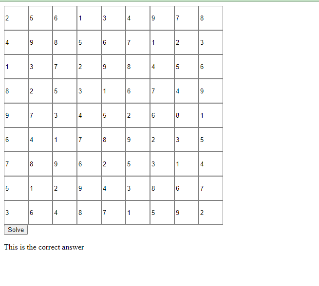
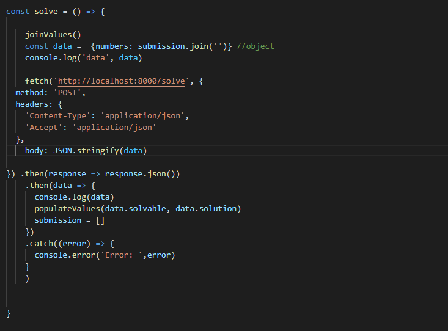
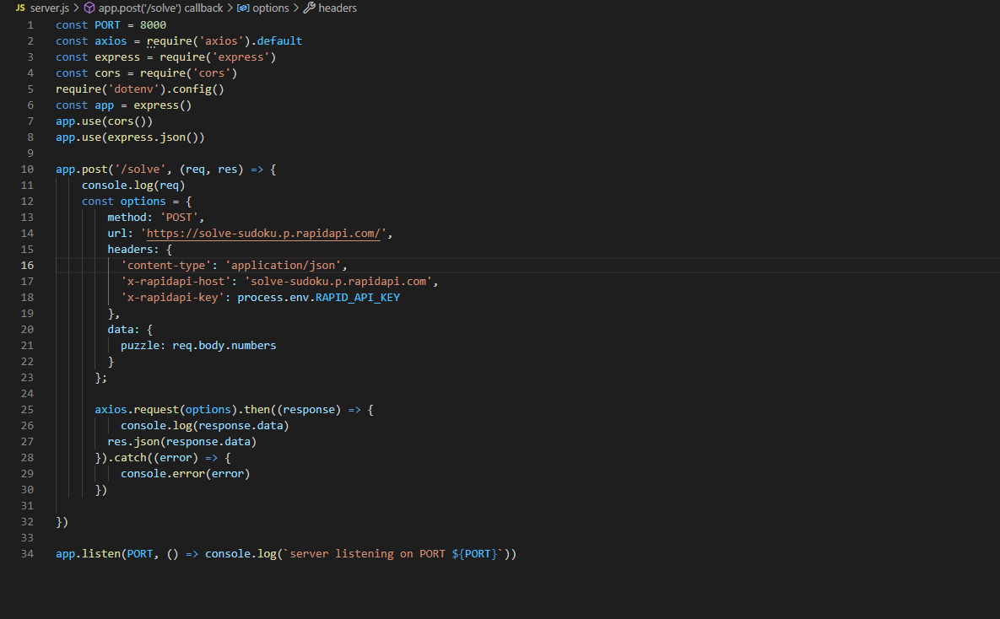

Description
Created a Sudoku solver using RapidAPI that will send a request to the SudokuAPI to calculate the sudoku puzzle and return the result. This was another fun weekend project that got me excited to learn more about the power of API's and displaying data in a readable format. It was also fun getting exposure in creating a backend and the importance of obscuring API keys to create a layer of security.
Procedure
This screenshot simply shows a populated (solved) sudoku table after clicking the solve button.
JSON
Here is the code for receiving the JSON object. This is the result that is shown on the frontend.
Code - Backend
This is the code for the backend. The constants declared above are constraints that will allow access from data from the API to display properly without any security flags, it also configures the API key. Once that has been established, we implement a post request to the sudoku API using the API key (in a .env file) to access the data. The data gets returned then the axios method is used to push the data to the console. Ready to be displayed!